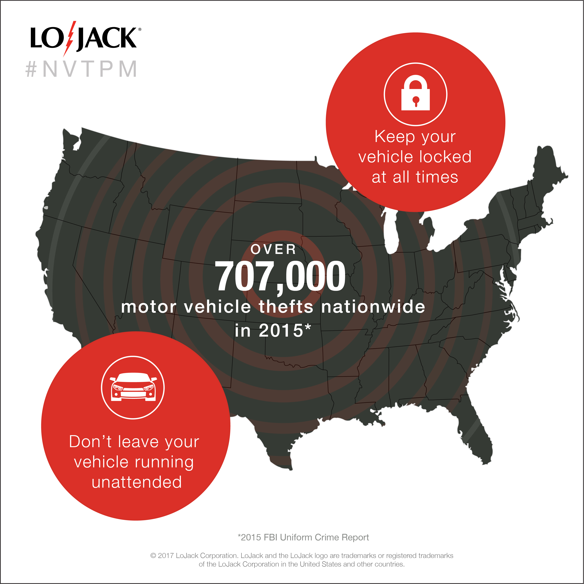
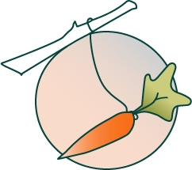

If you want to learn more...
scroll around and explore.
We collected data through contextual inquiry with stakeholders, observation of work practices and information system usage, as well as examination of training artifacts We synthesized and analyzed the qualitative data to produce a formal report in which we presented our recommendations for future action at the station.
My main role was in conducting hours of user interviews along with building the HUGE storyboard made of 349 post-its that helped us group and probe upon our data.

User Content Marketing at LoJack
During my internship with LoJack Corporation in 2017, I had the opportunity to wear many hats. I had hats in *breathe in* design, data collection/analysis, marketing, planning, event organization and user research. *breathe out* 😅
If you're interested in seeing a select number of projects that I completed, below is a link to my old portfolio where I have all of the projects housed along with descriptions and information.
